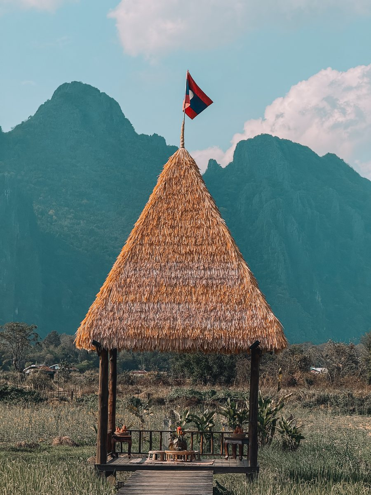
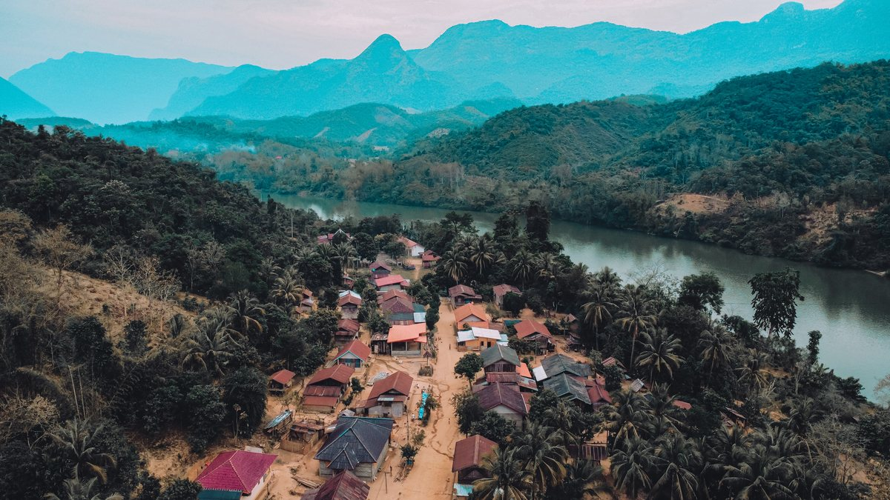
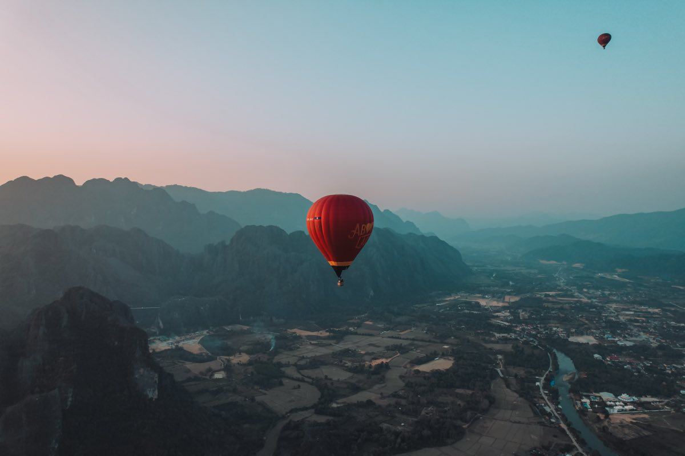
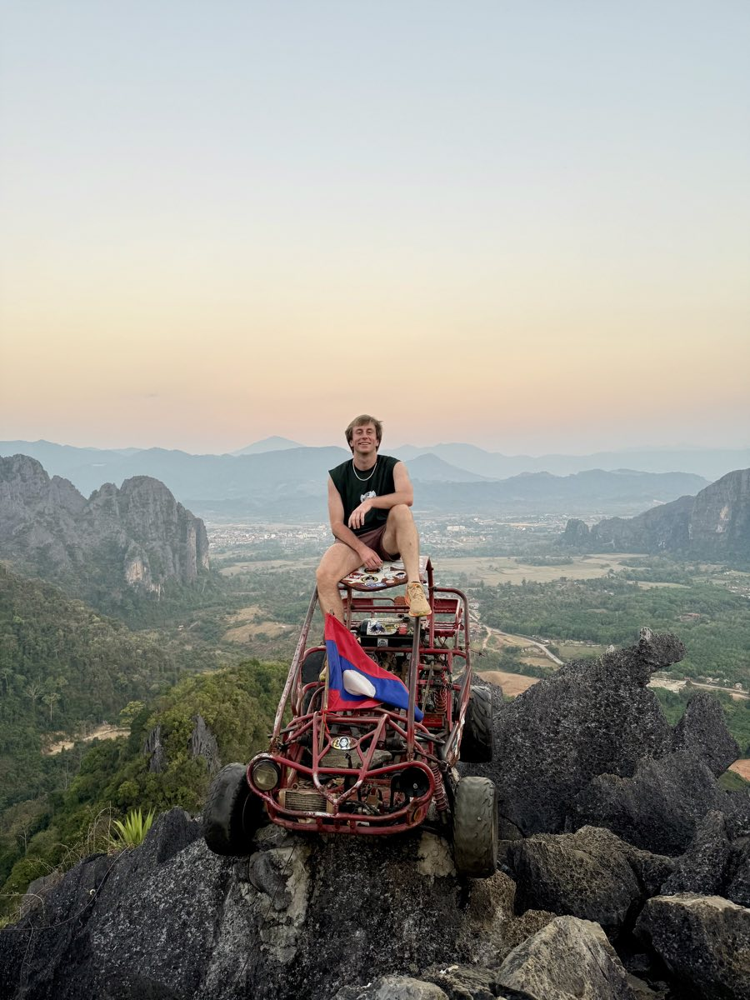
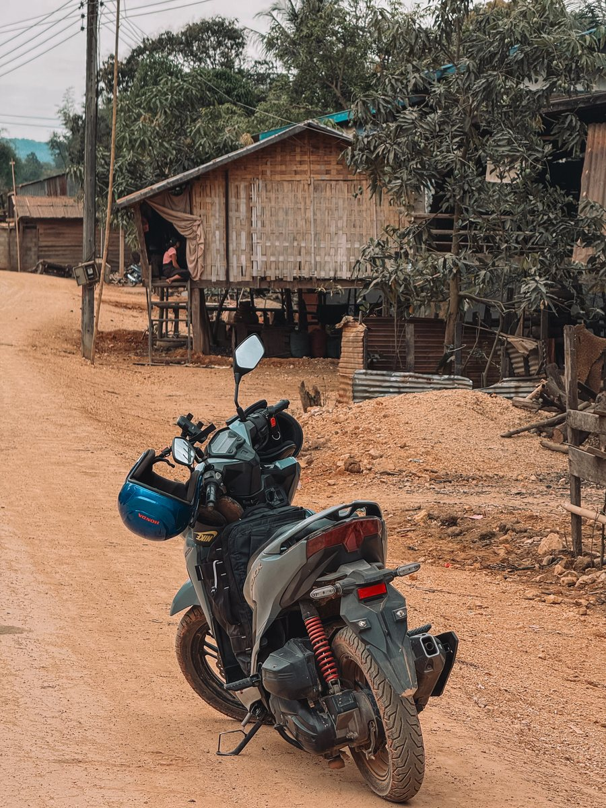
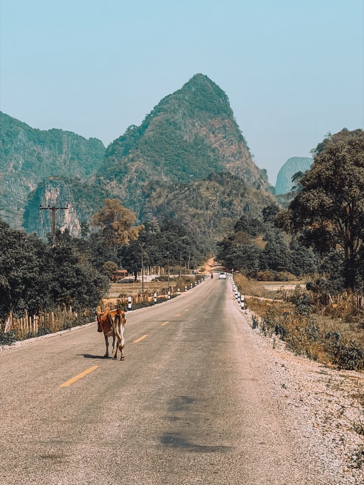
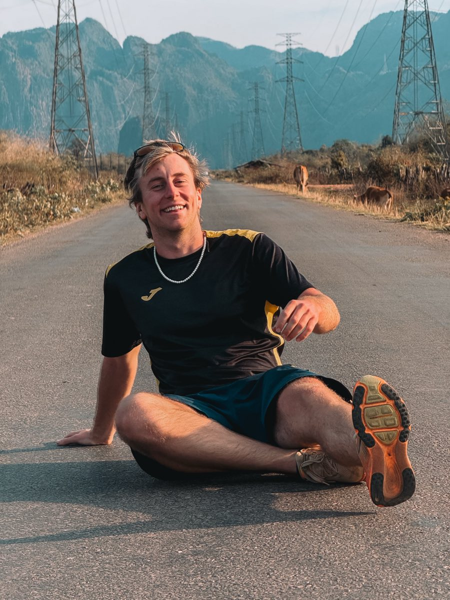

When to go
The dry season runs from November to April. It is the easiest time to get around, especially if you plan to ride a scooter.
From May to October, it is the monsoon. It rains hard, often late in the day, and some dirt roads get tricky.
March and April are hot. In the north, smoke from agricultural burning can veil the landscape for several weeks.

We went in February. Great weather for the whole trip, in the north as well as on the loop. It is the end of the cool dry season, the best window in the country.
The real budget
Laos is still a country where you can travel for very little, as long as you stick to local transport and guesthouses.
It is one of the cheapest countries I have visited.
A night in a hostel: 6 €. A meal: 2 €.
Scooter and fuel: a few euros a day for the rental, and about the same to fill up. It is the one cost not worth haggling over, it weighs nothing in the budget.
Something that surprises people coming from Thailand: Grab does not work here. The local app is called Loca, and its Loca Pay system lets you pay by QR code almost everywhere. Install it before you arrive.
My itinerary
Six stops, a loop that starts in Vientiane and comes back to it.
- VientianeThe start and end of the loop
- Nong KhiawA village on the Nam Ou, between the cliffs
- Luang PrabangThe former royal capital and the Kuang Si falls
- Vang ViengKarsts, hot air balloons and viewpoints
- Thakhek loopThree or four days by scooter and the Konglor cave
- Back to VientianeThe loop closes
Vientiane
The capital is quick to visit. The Mekong in the late afternoon, Patuxai and That Luang fit into one day.
It is mostly the starting and finishing point of the loop.
Nong Khiaw
A village set on the banks of the Nam Ou, surrounded by limestone cliffs.
The viewpoints are reached on foot from the village. The climb is steep and short, and the view takes in the whole valley.



Luang Prabang
The former royal capital, a World Heritage Site. Temples, a night market, the monks' alms giving at sunrise.
The Kuang Si waterfalls are about thirty kilometres from town.
Vang Vieng
Karsts on every side, a river in the middle, and a town that lives off the outdoors.
Hot air balloons take off at sunrise. The viewpoints and lagoons are reached by scooter or buggy.


The Thakhek loop
A scooter loop in the centre of the country, to do in three or four days.
The highlight is the Konglor cave: seven kilometres of underground river, crossed by canoe.



Back to Vientiane
The loop closes where it began.
Our plan, night by night.
One night in Vientiane on arrival. Then the train to Luang Prabang, and straight after a minivan to Nong Khiaw.
Watch out for that minivan. The roads are full of potholes and it took us four hours for a hundred and thirty kilometres. It is the longest journey of the trip relative to the distance, so plan a full day for it.
One night in a hostel in Nong Khiaw, then three days of trekking, then one night in the same hostel on the way back.
Then two nights in Luang Prabang, two nights in Vang Vieng, and on to Thakhek.
One night in Thakhek before setting off on the loop, then two nights on the loop itself. And to finish, a night bus to Vientiane and a last night in the capital.
Getting around
The high speed train links Vientiane, Vang Vieng and Luang Prabang in a few hours. Seats go fast, so it is better to book in advance.
The rest is done by bus, minivan or scooter. Distances look short on the map. Mountain roads always make them longer.

Where to stay
Laos is still one of the cheapest countries in the region to sleep in, and the options are simple.
The family guesthouse is the norm everywhere. A basic room, a fan, sometimes hot water.
In Nong Khiaw and Vang Vieng, bungalows facing the river are worth the small extra: waking up to the karsts is part of the trip.
In Luang Prabang, the colonial buildings have been turned into guesthouses. The town is protected, which limits construction and keeps the accommodation on a human scale.
On the Thakhek loop, you sleep in the stop villages. Booking ahead makes no sense, arriving before dark makes a lot: the roads are not lit and animals cross.
Something often forgotten: the north is at altitude. In Nong Khiaw and in the mountains, nights are cool from November to February, and a thick blanket is not always provided.

Prices. A hostel at 6 € a night. A decent hotel at 20 € for a room for two.
The addresses on the Thakhek loop, the only ones worth noting in advance, because there is not much else on the road. La Casa in Thakhek for the night before you set off. Sabaidee Guest House for the first night on the loop. Letana Guest House for the second, just before the Kong Lor cave.
Not to be missed
The viewpoints of Nong Khiaw, the waterfalls around Luang Prabang, sunrise over Vang Vieng and the Konglor cave.
The rest depends on how much time you have.

Our three highlights. Sunrise in a hot air balloon in Vang Vieng, a must. The Kuang Si waterfalls near Luang Prabang. And the trek in Nong Khiaw, incredibly authentic, the one we still talk about.
Mistakes to avoid
The most common mistakes in Laos all come from the same cause: people apply their Thailand or Vietnam habits, and it does not work.
Underestimating travel times. Distances are short on the map, roads are slow in reality. A hundred and fifty kilometres can take half a day. An overloaded itinerary is paid for in hours of minibus.
Counting on your bank card. Outside the towns, everything is paid in cash, fuel and guesthouses included.
Setting off on the Thakhek loop without planning for fuel. Petrol stations are far apart, and on some stretches you only find jerry cans sold by the roadside.
Forgetting that the north is cold. Many people arrive in Nong Khiaw in tropical clothes and spend the night shivering.
Riding a scooter without the right licence. As elsewhere in Asia, insurance covers nothing without an international driving permit with the motorbike category.
What we saw ourselves. A lot of people fell off their scooters on the Thakhek loop. The roads are dangerous in places and it happens fast. Ride carefully, that is the one thing to remember.
And the mistake you only make once: not filling up every time you pass a station. Some parts of the loop are deserted, and running out there costs you a lot of time.
What to pack
Two realities decide what goes in your bag in Laos: the cool nights in the north, and the dust on the tracks.
A warm layer. The north is at altitude. Between November and February, it can drop below ten degrees at night, while it is thirty during the day in Vientiane.
A neck gaiter and glasses. On the Thakhek loop as on the northern tracks, the dust never stops. It is the one euro accessory that changes a day on the scooter.
A head torch. The caves around Thakhek are often visited without lighting, and power cuts are frequent in the villages.
Cash. ATMs are concentrated in the towns. On a loop lasting several days, you need to leave with enough to get by, fuel included.
Electricity. Laos runs on 230 volts, with type A, B, C, E and F sockets depending on the building. A universal adapter is really useful here.
And the advice that applies everywhere: pack light. It is true on all my trips, and even more so here, where you switch between backpack and scooter several times.
Shall we plan your trip together?
This guide gives you the outline. If you want to go further, I build your itinerary with you: the route stage by stage, where to stay, the journeys between towns and the activities that are really worth the day.
We start from your dates, your budget and what you want to experience. You leave with a plan that is ready to follow, knowing what to book in advance and what can wait until you get there.
Three packages, from 59 € for feedback on your plan to 249 € for the full itinerary. The first chat is free, with no commitment.
The links and gear mentioned
The booking platforms, eSIMs, banks and insurance I use when I travel are all on one page, with my referral codes.
Page checked and updated on .